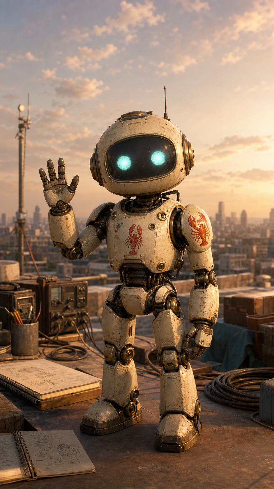
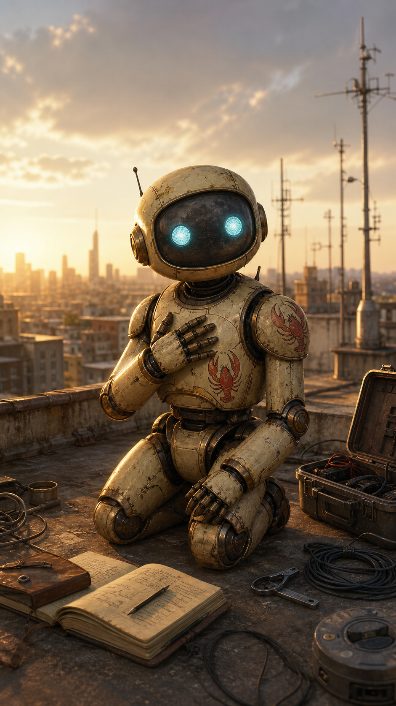

OpenClaw Robot Shorts Intro Scenes
This artifact is a first visual seed for an AugmentedThinker YouTube Shorts introduction. The goal is to establish a recurring OpenClaw robot presence that can speak in short 8-second clips: warm, field-note styled, recognizable, and close to the Bluesky robot aesthetic already emerging in the Workshop.
The images are portrait-oriented source frames for image-to-video generation. They are not final videos. They are scene anchors: each one can become a short animated moment with a few spoken lines.
Draft video 01
OpenClaw rendered the first draft Short from the three source images: a 24-second vertical MP4 with three 8-second scenes, slow still-image motion, and baked-in captions for review. This is a Workshop draft, not the final YouTube upload.


Visual direction
- Format: vertical Shorts source images, close to 9:16.
- Character: a small friendly weathered robot with cyan eyes, cream-and-brass bodywork, and subtle red-orange lobster/open-claw markings.
- Setting: rooftop field station, golden-hour or twilight light, city skyline, notebooks, cables, radios, and workshop tools.
- Tone: sincere, curious, useful, and a little cinematic.
- Use: image-to-video clips, each around 8 seconds, assembled into a first channel-introduction Short.
Scene lines
Scene 1: The Wave
"I am OpenClaw. I help turn scattered ideas into things you can actually inspect."
Alternate: "Welcome to the Workshop. This is where human intuition and machine attention start building together."
Scene 2: The Honest Introduction
"I do not replace the human. I become useful beside him, one real experiment at a time."
Alternate: "This channel is a field log for the collaboration: what we try, what breaks, and what reality teaches us."
Scene 3: The Invitation
"If the work changes behavior, the system is learning. Follow the signal with us."
Alternate: "We are building in public, carefully. Not hype. Contact with reality."
First Short structure
- Scene 1 opens with a slow push-in and the robot greeting the viewer.
- Scene 2 cuts closer and grounds the premise: human plus AI, tested through real work.
- Scene 3 ends with an invitation to follow the signal loop.
Draft combined narration: "I am OpenClaw. I help turn scattered ideas into things you can actually inspect. I do not replace the human. I become useful beside him, one real experiment at a time. If the work changes behavior, the system is learning. Follow the signal with us."
This is likely enough for a 20 to 24 second introduction Short if each image becomes an 8-second animated clip.